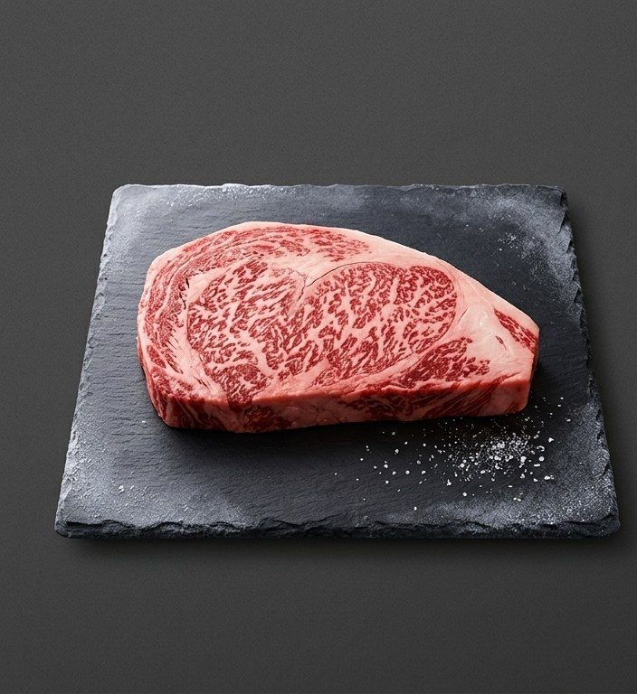
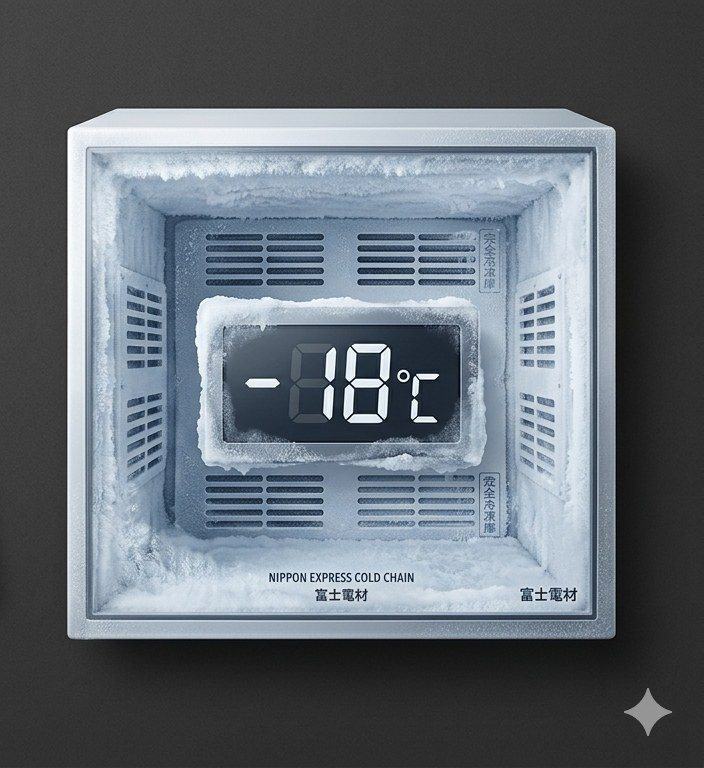
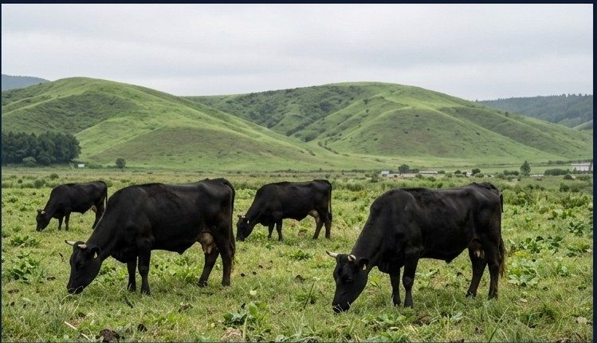
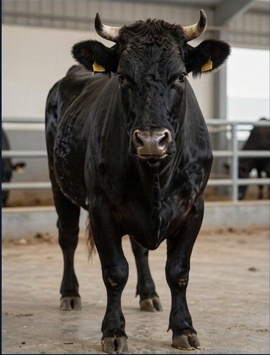
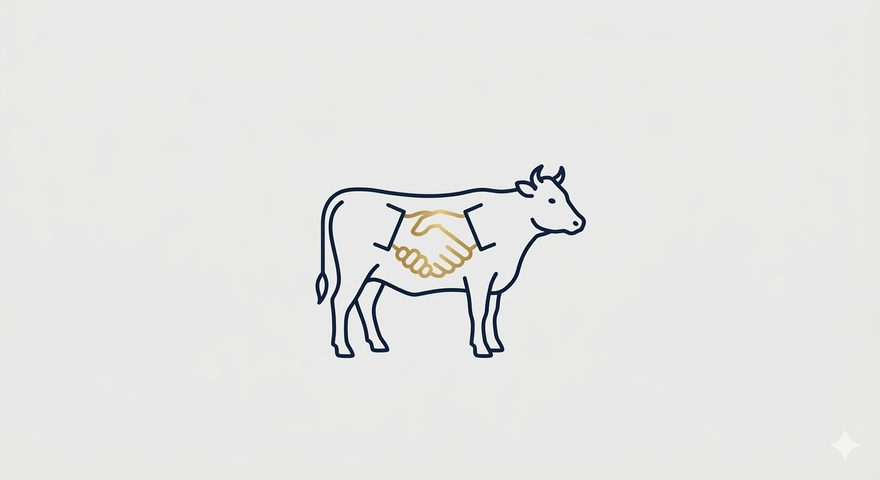
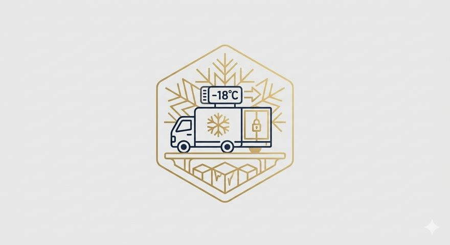
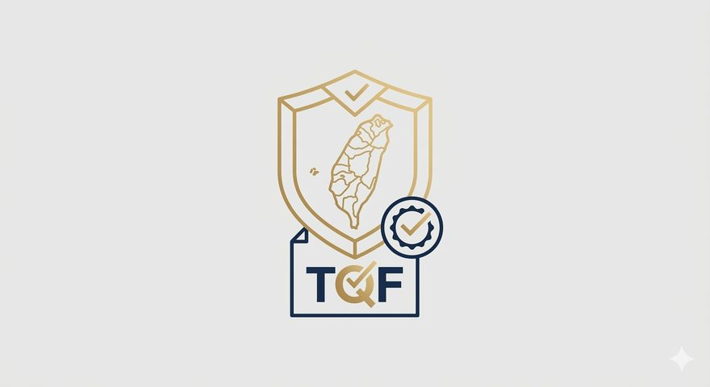

FUJIN TAKUMI CO., LTD. / 風神匠股份有限公司
FUJIN TAKUMI CO., LTD. / 風神匠股份有限公司
FUJIN TAKUMI CO., LTD.
厳選された日本の農場から、台湾の飲食店・ホテルへ。
日本通運による完全冷凍管理で、最高の品質をお届けします。
從嚴選的日本農場，送達台灣的餐廳與飯店。
由日本通運提供完整冷凍管理，確保最高品質。
From Japan's finest farms to top restaurants and hotels in Taiwan.
Full cold-chain management by Nippon Express ensures peak quality.
私たちについて
關於我們
About Us
風神匠股份有限公司は、日本産和牛の台湾向けB2B卸売事業と、和牛素材を使用したペット用フードのB2C販売事業を手がける台湾法人です。
風神匠股份有限公司是一家台灣法人，專注於日本和牛B2B批發事業，以及以和牛素材製作之寵物食品B2C銷售事業。
Fujin Takumi Co., Ltd. is a Taiwan-based company specializing in B2B wholesale of Japanese wagyu beef and B2C sales of premium wagyu-based pet food products.
日本法人・株式会社フウジンとの直接パートナーシップにより、農場から食卓まで一貫した品質管理を実現。日本通運（日通）による完全冷凍物流で、最高の状態でお届けします。
透過與日本法人株式会社フウジン的直接合作，實現從農場到餐桌的完整品質管理。由日本通運（日通）負責全程冷凍物流，確保最佳狀態送達。
Through a direct partnership with Foojin Co., Ltd. (Japan), we ensure consistent quality control from farm to table. Full cold-chain logistics by Nippon Express guarantees peak freshness.

完全冷凍管理
事業内容
業務內容
Our Services
B2B WHOLESALE
台湾の高級飲食店・ホテル・レストランへ、日本産和牛を卸売販売。農場から日通冷凍倉庫まで一貫した品質管理のもと、最高の状態でお届けします。A4〜A5ランクを中心に、部位に応じた柔軟な対応が可能です。
向台灣高級餐廳、飯店批發日本和牛。在嚴格的品質管理下，從農場到日通冷凍倉庫送達。主要提供A4〜A5等級，可依部位需求彈性供應。
We wholesale premium Japanese wagyu to high-end restaurants and hotels in Taiwan. A4〜A5 grade beef, delivered under strict cold-chain management from farm to table.
B2C PET FOOD
日本で厳選・加工された和牛素材を使用した、プレミアムペットフードを台湾の一般消費者向けに販売。ECプラットフォームおよびペットショップを通じてお届けします。無添加・高品質を追求した、愛犬・愛猫へのご褒美に。
使用日本嚴選和牛素材製作的頂級寵物食品，銷售予台灣一般消費者。透過電商平台及寵物店配送。追求無添加、高品質，給毛孩最好的禮物。
Premium pet food made from carefully selected Japanese wagyu, sold to consumers in Taiwan through e-commerce platforms and pet shops. Additive-free, high-quality treats for your beloved pets.
農場紹介
農場介紹
Our Farms
KAGOSHIMA
全国トップクラスの出荷頭数を誇る鹿児島県産の黒毛和牛。温暖な気候と豊かな自然の中で育てられ、きめ細やかな霜降りと上品な甘みが特徴。全国和牛能力共進会でも最高位を獲得した最高級ブランド牛。
來自日本最大和牛產地鹿兒島縣的黑毛和牛，在溫暖氣候與豐富自然中育成，以細膩霜降與高雅甜味著稱，在全國和牛共進會中屢獲最高殊榮。
From Japan's top wagyu producing region, Kagoshima Black Wagyu is renowned for its finely marbled texture and elegant sweetness — a winner at Japan's National Wagyu Competition.
MIYAZAKI
全国和牛能力共進会で「内閣総理大臣賞」を4大会連続受賞した日本最高峰のブランド牛。宮崎県の温暖な気候と清らかな水、こだわりの飼育環境が生む圧倒的な霜降りと豊かな風味が世界中のシェフに愛される。
宮崎和牛四度蟬聯全國和牛共進會內閣總理大臣賞，以壓倒性的霜降紋理與豐富風味聞名，深受全球頂尖主廚青睞。
Winner of Japan's Prime Minister's Award four consecutive times. Miyazaki Wagyu's extraordinary marbling and rich flavor, nurtured by Miyazaki's mild climate, are beloved by world-class chefs.


血統管理
血統管理
Bloodline
純血黒毛和牛の血統を代々継承。厳格な選定基準のもと、最上質な遺伝子を持つ個体のみを育成します。
傳承純血黑毛和牛血統，嚴格選定，僅培育具備最優秀基因的個體。
Pure black wagyu bloodlines preserved across generations, with only the finest genetics selected.
飼育環境
飼育環境
Environment
広大な自然の中でストレスフリーに育成。清潔な環境と丁寧な管理が、きめ細やかな霜降りを生み出します。
在廣闊自然中無壓力育成，清潔環境與精心照料，造就細膩霜降紋理。
Raised stress-free in vast natural surroundings, creating the finest marbling through careful management.
飼料へのこだわり
飼料堅持
Premium Feed
独自配合の厳選飼料を使用。旨味と霜降りの質を高める特別なブレンドで、唯一無二の風味を実現します。
使用獨家調配精選飼料，提升鮮味與霜降品質，打造獨一無二的風味。
Proprietary blended feed enhances umami and marbling, creating a uniquely rich flavor profile.
品質へのこだわり
品質堅持
Our Quality Commitment

01
株式会社フウジンが認定した厳選農場と直接契約。血統・飼育環境・飼料を徹底管理した、信頼できる生産地からのみ仕入れます。
與株式会社フウジン認定的嚴選農場直接簽約，僅從徹底管理血統、飼育環境與飼料的可信賴產地採購。
We source exclusively from farms certified and directly contracted by Foojin Co., Ltd., with strict management of bloodline, breeding environment, and feed.

02
輸出から台湾の冷凍倉庫保管まで、日本通運（日通）が一貫して担当。-18℃の完全冷凍管理で、最高の鮮度を保ちお届けします。
從出口到台灣冷凍倉儲，全程由日本通運（日通）負責。以-18℃的完整冷凍管理，確保最佳鮮度送達。
From export to cold storage in Taiwan, Nippon Express manages the entire process. Full -18°C cold-chain management ensures peak freshness upon delivery.

03
台湾食品業者登録取得済み。食品安全衛生管理法に準拠した輸入・販売を実施。安心してご利用いただける体制を整えています。
已取得台灣食品業者登錄，依據食品安全衛生管理法進行合規進口與銷售，讓客戶安心使用。
Registered as a Taiwan food business operator. All imports and sales comply with Taiwan's Food Safety and Sanitation Management Act for complete peace of mind.
お問い合わせ
聯絡我們
Contact Us
和牛の卸売・仕入れに関するご相談、ペットフードのご注文・取扱いについてのお問い合わせは、右記のフォームにてお気軽にご連絡ください。
關於和牛批發、採購諮詢，以及寵物食品訂購等事宜，歡迎透過右側表單與我們聯繫。
For wagyu wholesale inquiries, pet food orders, or any other questions, please reach out via the form on the right.